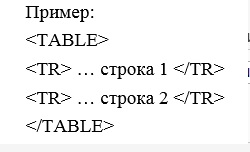
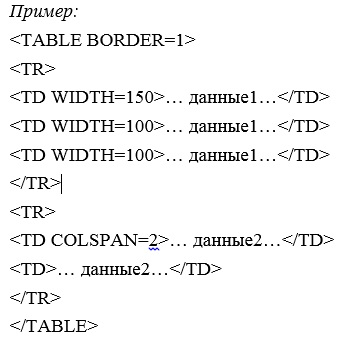

Элемент TR
Элемент TR является контейнером для группы ячеек в строке, т.е. задает строки таблицы. Все ячейки в таблице должны находиться внутри элементов TR. Количество строк в таблице соответствует числу элементов TR.

Закрывающий тег: опционально.
Собственные атрибуты:
ALIGN – Отменен. Указывает выравнивание в окне браузера. Может принимать следующие значения:
- • Center – выравнивание по центру.
- • Left – выравнивает по левому краю (принято по умолчанию).
- • Right – выравнивает по правому краю.
- • Char – текст выравнивается относительно указанного символа (устаревшее свойство).
- • Justify – текст выравнивается по ширине ячейки.
VALIGN – определяет выравнивание по вертикали в ячейках группы строк:
- • Top – выравнивание по верхнему краю ячейки.
- • Middle – выравнивание по центру ячейки.
- • Bottom – выравнивание по нижнему краю ячейки.
Общие атрибуты:
BACKGROUND – задает адрес ссылки фонового рисунка для таблицы.
BORDERCOLOR – задает цвет рамки.
BORDERCOLORDARK – задает цвет «затененной» части рамки.
BORDERCOLORLIGHT – задает цвет «светлой» части рамки.
NOWRAP – запрещает перенос длинных строк.
Элементы TH и TD
Элементы TH и TD служат для задания ячейки (столбца). Причем TH используется для ячеек-заголовков, а TD – для ячеек-данных. Если не указано иначе, то текст, расположенный в TH будет выводиться жирным шрифтом с выравниванием по центру, а в TD – нормальным начертанием с выравниванием по левому краю. Данные элементы всегда должны быть вложенными в контейнер TR.

Закрывающий тег: опционально.
Собственные атрибуты:
ALIGN и VALIGN с теми же значениями
COLSPAN – определяет протяженность ячейки в длину, т.е. на сколько столбцов данная ячейка протягивается.
ROWSPAN – определяет протяженность ячейки в высоту, т.е. на сколько строк данная ячейка распространяется.
HEIGHT – отменен. Задает рекомендуемую высоту ячейки в пикселях.
WIDTH – отменен. Задает рекомендуемую ширину ячейки.
Общие атрибуты:
BACKGROUND – задает адрес ссылки фонового рисунка для таблицы.
BORDERCOLOR – задает цвет рамки.
BORDERCOLORDARK – задает цвет «затененной» части рамки.
BORDERCOLORLIGHT – задает цвет «светлой» части рамки.
NOWRAP – запрещает перенос длинных строк.